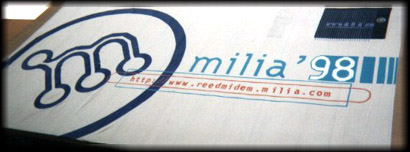
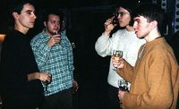
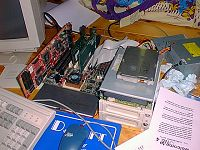
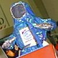
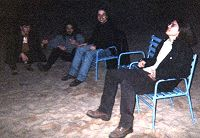

|
 9h00 du matin, des piles de sacs, boîtiers et autres bagages fraîchement débarqués du car, mis gratuitement à la disposition des participants du nord de la France, gisent devant l'entrée du palais des festival de Cannes. Après quelques minutes d'attentes Christian Artin de l'association marseillaise CYBERNOSTRA et organisateur de la SERVO 98 nous accueille avec un entrain typiquement provençal et nous dirigea vers le bureau d'enregistrement. Là, une foule de professionnels s'affairent à obtenir leur précieux passe (env. 2000f pour les professionnels et gratuit pour nous!) pour le MILIA 98 tandis que nous nous faisions tirer le portait avec une caméra au guichet 32. Les réservations avaient été préalablement faites via EMAIL au près de la CYBERNOSTRA. A peine avions-nous mis nos badges et déplacé nos bagages qu'un lourd sac frappé du sigle MILIA 98 et rempli de bonnes choses nous a été attribué. Un copieux petit déjeuner nous attendait à l'intérieur, chose étonnante pour qui est allé dans une coding party "conventionnelle" , mais bien moins que ce qui allait arriver. Sous une déluge de Jungle, Drum
& Bass et Rap , mixée live par DJ Bruno de Massilia Sound System
assigné à notre party, nous primes possession des lieux
tout en scrutant la salle prévue pour environ 100 à 150
personnes et jonché de sigles FRANCE TELECOM et SERVO 98. On nous
annonça qu'il y avait une sleeping room avec des matelas (de suite
inauguré par Patapom/BOMB),
des douches, des serviettes propres et du savon, un téléphone
disponible à toute heure pour rassurer nos familles et petites
amies, ainsi qu'un réseau local, une connexion Internet et des
moniteurs à notre disposition. Une fois débarbouillés
et installés nous pûmes observer un va-et-vient continuel
de journalistes, exposants et caisses de matériel haut de gamme
qui défilaient dans le hall d'entrée ou se situait la SERVO
98. Au cours de la matinée plusieurs autres participants de tous
horizons (même des filles !) comme l'école des beaux-arts
de Marseille complétèrent l'assemblée. Étaient
présent :  Le salon se remplissait à nouveau chaque matin où beaucoup de démomakers dormaient et où des échanges plus "professionnels" avaient lieu... De mignonnes et très serviables hôtesses balisaient chaque coin du salon, qui se déroulait sur 4 étages. Au rez-de-chaussée le forum des jeunes créateurs rassemblait des auteurs de tout pays qui exposaient leurs présentations multimédia. Parallèlement, des centaines de stands de sociétés internationales présentaient leurs produits, allant des constructeurs aux présentations multimédia en passant bien sûr par les sociétés de jeux vidéo. Ainsi étaient présents, INTEL, APPLE, FRANCE TELECOM, HAVAS, CANAL+, INFOGRAMES, CRYO, YAHOO, SONY (avec un étage entier réservé à la PSX) et des centaines d'autres...qui organisaient à tour de rôle des présentations de produits en avant-première, des conférences, présidées par les plus grandes figures de l'informatique (John ROMERO - Sid MEYER - Richard GARRIOTT - Chris ROBERTS - Audrey MANN) suivis de somptueux cocktails où le champagne coulait à flots. Le MILIA édition 98 à été ponctué par diverses manifestations d'INFOGRAMES à la plage et sur les marches du palais, où nous avons accueilli, comme seuls savent le faire les démomakers, les limousines amenant DAFFY DUCK, TITI, GROS MINET et le lapin quinquagénaire BUGS BUNNY. Notre bruyante présence fut remarquée à toutes ces réceptions, de par la corne de brume que Phar/FLOWER CORP. faisait retentire à toute occasion et aussi à cause de nos habits de soirée qui se résumaient au bon vieux JEAN/BASKET. Des écrans géants meublaient chaque salle du palais montrant 24h sur 24 un flot ininterrompu de démos puisque, par un heureux hasard, la régie finale se trouvait au sein de la coding et était commandée par les démomakers. Ainsi les plus mythiques et spectaculaires démos PC furent projetée tout au long du MILIA et jeté par la même en pâture au néophytes du salon. Ce qui a amené tout les professionnels à vouloir connaître le monde de la démo et à nous assaillir de questions tout au long de la Party. Bien que peu conventionnelle par les moyens
mis en œuvre,   Malgré que nous l'ayons souvent oublié, à cause des évènements qui ponctuaient la SERVO 98, il serait peut-être temps de rappeler le but premier de cette coding : préparer nos productions. Le niveau était d'ailleurs très bon pour cette première édition : la SQUARE de PULSE, la MACHINA de PSYKO, la EDEN de BOMB, la TRIBES de PULSE & MELON, la DENTRO de FLOWER CORP, la SERVO 98 par SKAL/BOMB. Énoncé qui respecte à peu près l'ordre final de la compo demo (au moins pour les trois premières) . En plus était organisés les traditionnels concours de graph (gagnant : Made pour la pic CELIA), de musiques (gagnant : Mad Process / Psyko pour une zik techno plutôt pas mal !), et, moins classique, une compo de jeux ou outils HTML. Durant la projection finale de ces productions, les demomakers ne représentaient que 20% de l'assistance, le reste étant composé du jury (PDG de France Telecom multimédia, des journalistes à CODA, TIMED OUT et MTV, et d'autres participants du salon intéressés par la manifestation, le tout chapeauté par Christian Artin président de CYBER NOSTRA) et d'une bonne centaine de professionnels de tout bord curieux de ce que pouvait faire ces "jeunes créateurs". Mais il ne faudrait pas oublier les fast compo où l'on présente des productions faites sur place, le thème étant "les pingouins de Cannes", en référence à l'OS de prédilection des demomaker qu'est LINUX mais surtout à cause des costard / cravate qui peuplaient le Milia et que l'on pouvait croiser dans les cocktails, où bouteilles de champagnes, petits fours et téléphones portables étaient aussi banal que des bouteilles de lait à un goûter (ndlr: y a du lait au goûters ? moi je me rapelle de vodka...). Tout le monde s'en est donné à cœur joie bien sûr, le tout avec une ambiance musicale plutôt très agréable montée par Bruno, le DJ le plus sympa qu'on ait vu dans une coding (sic) et qui faisait retentire toute les cinq minutes le jingle de la party, que tout les participants crient sûrement encore à l'heure où nous écrivons ces lignes... Pour conclure, la fin de la coding-party
a été à l'image de que nous avons éprouvé
durant 4 jours : incroyable. Toute la "cérémonie" de clôture,
cela va sans dire, a été l'occasion d'un énième
cocktail. Mais ce qui est clair c'est que nous n'oublierons pas l'effet
qu'un parterre de jeunes passionnés élaborant gratuitement
tout ce qui leur fait plaisir peut avoir sur des professionnels qui évoluent
parallèlement et en-dehors de cette logique. Nous n'oublierons
pas non plus la  |
Cannes, 7 février 1998, 26 demomakers parisiens posent le pied sur la croisette, prêt à vivre 4 jours ébouriffants et pleins de surprises durant la 1ère SERVO party qui se déroulait au salon professionnel MILIA 98.
|
[ >NEWS / >PEOPLE / >PARTIES / >MISC / >LINKS / >FAQ / >CREDITS ] |
|||